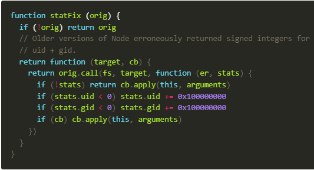
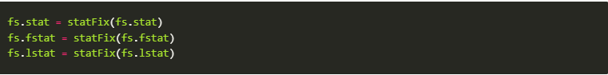

GitBook 創建
紀錄GitBook 創建遇到的問題
正常流程
- 安裝套件 npm install gitbook-cli -g
- 安裝完 gitbook 套件後，使用 gitbook init 來初始化
- 初始化後，使用 gitbook serve 在 localhost:4000 來瀏覽 gitbook
安裝 GitBook
使用 npm install gitbook-cli -g 來安裝
初始化 GitBook 錯誤1
使用 指令 gitbook init 但產生以下報錯：
因為這個系統上已停用指令碼執行，所以無法載入 C:\...\XXX.ps1 檔案。
如需詳細資訊，請參閱 about_Execution_Policies，網址為 https:/go.microsoft.com/fwlink/?LinkID=135170。
位於 線路:1 字元:3
+ . 'C:\Users\ruyut\Documents\WindowsPowerShell\Microsoft.PowerShell_pr ...
+ ~~~~~~~~~~~~~~~~~~~~~~~~~~~~~~~~~~~~~~~~~~~~~~~~~~~~~~~~~~~~~~~~~~~
+ CategoryInfo : SecurityError: (:) [], PSSecurityException
+ FullyQualifiedErrorId : UnauthorizedAccess
解決方法： 以系統管理員身分打開terminal 使用 指令 Get-ExecutionPolicy 可以查看當前的規則，預設的規則為 Restricted
AllSigned: 所有腳本都可以執行，指令碼與設定檔則是需由信任的發行者簽署
Bypass: 不會封鎖任何項目，且不會顯示警告或提示
Default: 預設
RemoteSigned: 腳本和組態檔需要數位簽章，除非在本機電腦上撰寫
Undefined: 未設定
Unrestricted: 非 Windows 電腦使用的原則
使用指令 Set-ExecutionPolicy RemoteSigned 解除限制
初始化 GitBook 錯誤2
使用 指令 gitbook init 又報錯， 提示的錯誤為：cb.apply is not a function
解決方法：找到錯誤的檔案 錯誤的檔案為：/usr/local/lib/node_modules/gitbook-cli/node_modules/npm/node_modules/graceful-fs/polyfills.js 此為 graceful-js npm 包
問題給出的函數為：

找到文件內的這段代碼

將他 註釋掉 (Ctrl + /) 存檔後，再回到 Terminal 使用指令 gitbook init 即可成功使用
添加文檔 book.json
以下是我使用的文檔
{
"plugins": [ "anchor-navigation-ex", "edit-link", "copy-code-button", "theme-comscore", "ga" ],
"pluginsConfig": {
"fontSettings": {
"theme": "night",
"family": "sans"
},
"theme-default": {
"showLevel": false
},
"anchor-navigation-ex": {
"showLevel": false,
"associatedWithSummary": false,
"printLog": false,
"multipleH1": false,
"mode": "float",
"showGoTop":true,
"float": {
"floatIcon": "fa fa-navicon",
"showLevelIcon": false,
"level1Icon": "fa fa-hand-o-right",
"level2Icon": "fa fa-hand-o-right",
"level3Icon": "fa fa-hand-o-right"
},
"pageTop": {
"showLevelIcon": false,
"level1Icon": "fa fa-hand-o-right",
"level2Icon": "fa fa-hand-o-right",
"level3Icon": "fa fa-hand-o-right"
}
},
"edit-link": {
"base": "https://github.com/<你的 GitHub 帳號>/demo-build-and-publish-gitbook/edit/master/",
"label": "Edit This Page"
},
"ga": {
"token": ""
}
}
}
使用 gitbook install 安裝這些套件
使用 gitbook serve
無報錯 使用成功 打開 localhost:4000 即可瀏覽你的 gitbook 啦!!